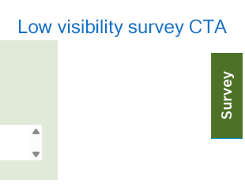
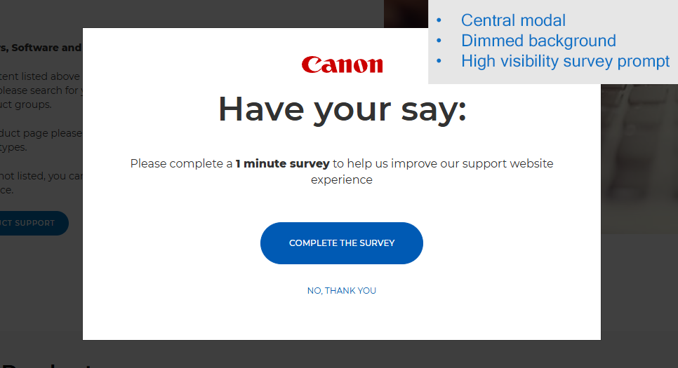
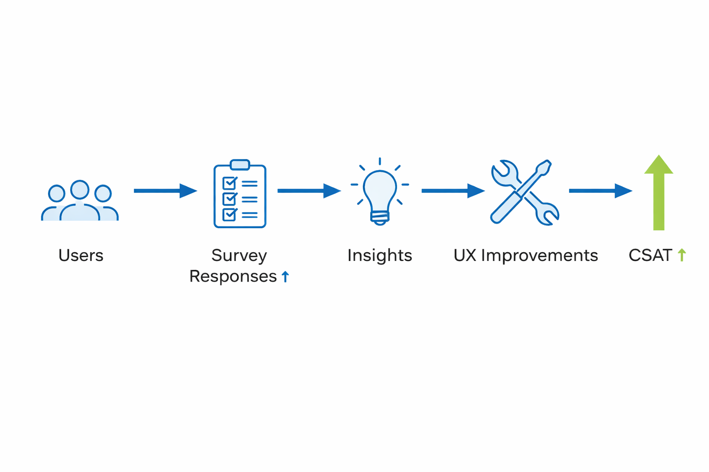

Context
Customer satisfaction (CSAT) was measured via an on-site survey across EMEA support pages.
Despite ~4.5 million monthly users, only ~2,400 surveys were completed per month, limiting the reliability of insights.
Problem
- Extremely low response rate (<1%)
- Survey was hidden and difficult to access
- Limited confidence in CSAT data
This created a data gap, making it difficult to accurately identify and prioritise customer issues.
My Role
I identified the gap in feedback collection and led the redesign of the survey trigger mechanism, working with developers and stakeholders to improve visibility while protecting user experience.
Approach
1. Identifying the data gap
I compared overall traffic (~4.5M users/month) with survey completions and identified a significant mismatch, indicating poor discoverability.
2. Testing a new survey trigger
I designed and ran an A/B test comparing the existing static survey button with an exit-intent pop-up.
3. Balancing visibility with user experience
To avoid disrupting users, the pop-up was triggered only after 30 seconds on page, on exit intent, and suppressed for 30 days after dismissal.
4. Scaling insight generation
Increased responses required new processes for analysing data, enabling faster identification of recurring issues and stronger evidence for UX improvements.
Before vs After

Before: Survey hidden within page UI, resulting in low engagement.

After: Exit-intent pop-up increased visibility at the right moment.
How It Worked

Improved visibility increased feedback volume, enabling faster insight generation and driving continuous UX improvements.
Outcome
- Survey completions increased from ~2,400/month to 15,000/month during testing
- Scaled to 50,000+ responses per month after rollout
- +3% CSAT increase during A/B test
- +8% increase following full rollout (improved measurement accuracy)
Improved data quality enabled identification of key issues, including Wi-Fi setup challenges, which informed subsequent UX improvements such as the Setup tab.
Impact Beyond This Project
The improved feedback loop enabled more accurate prioritisation of UX issues and contributed to further CSAT improvements through targeted product and content changes.